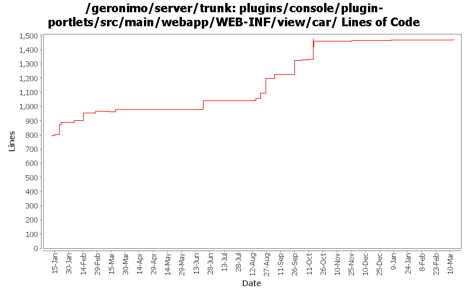

[root]/plugins/console/plugin-portlets/src/main/webapp/WEB-INF/view/car

| Author | Changes | Lines of Code | Lines per Change |
|---|---|---|---|
| Totals | 97 (100.0%) | 1175 (100.0%) | 12.1 |
| linsun | 26 (26.8%) | 686 (58.4%) | 26.3 |
| gawor | 11 (11.3%) | 211 (18.0%) | 19.1 |
| djencks | 29 (29.9%) | 146 (12.4%) | 5.0 |
| dwoods | 16 (16.5%) | 78 (6.6%) | 4.8 |
| jbohn | 9 (9.3%) | 23 (2.0%) | 2.5 |
| kevan | 2 (2.1%) | 20 (1.7%) | 10.0 |
| xuhaihong | 4 (4.1%) | 11 (0.9%) | 2.7 |
GERONIMO-4517 Apply unified message display style(G-4484) to javascript alert messages. Together with the localization of these messages. Thanks for the patch, Gang Yin
11 lines of code changed in 4 files:
merge 749305 from branches/2.1 - GERONIMO-4562 revert a small portion of 738143 that broke the export plugin function
1 lines of code changed in 1 file:
part 4 of more cleanup of old forms (see Rev738104 for part 3)
6 lines of code changed in 6 files:
cleanup old forms that are not using the post method
2 lines of code changed in 2 files:
GERONIMO-4474 Pull out the text in the JSP files to resource bundle files. Applied jsp-localization-fix.patch from Gang Yin.
2 lines of code changed in 1 file:
GERONIMO-4484 Extraction, localization and display of messages generated in portlets. Applied common-message-plugin.patch from Gang Yin, along with removing Tomcat API depends introduced in early patch.
1 lines of code changed in 1 file:
GERONIMO-4486 Custom server assembly portlet doesn't filter specific word
7 lines of code changed in 1 file:
GERONIMO-4474 Pull out the text in the JSP files to resource bundle files. Patches provided by Gang Yin.
10 lines of code changed in 5 files:
GERONIMO-4432 Allow users to filter plugins by category and name columns when selecting assembly list
21 lines of code changed in 1 file:
replace hardcoded value with message key
1 lines of code changed in 1 file:
GERONIMO-4364 Split the assemblylist page to 2 pages
94 lines of code changed in 4 files:
reorganize code a bit and enable hover plugin to show desp of the plugin
44 lines of code changed in 2 files:
GERONIMO-4362 Allow users to filter plugins on server assembly portlet & allow users to turn on expert users mode
189 lines of code changed in 2 files:
select framework plugin group by default related to GERONIMO-4226
15 lines of code changed in 2 files:
GERONIMO-4336 some improvements to the addRepository page of the install plugin portlet
5 lines of code changed in 1 file:
add helper pages for install plugin, create plugin and server assembly portlets
96 lines of code changed in 3 files:
select the boilerplate plugin by default for application centric assembly
29 lines of code changed in 1 file:
part of GERONIMO-4265: Enhance Custom server assembly portlet usability - give users 3 custom assembly modes to pick
108 lines of code changed in 2 files:
divide plugins to application plugins and system plugins in the assembly list view
39 lines of code changed in 1 file:
allow a user to click a plugin to see plugin metadata in assembly listServer page and replace some hardcoded values
31 lines of code changed in 3 files:
use name instead of moduleid and enable sort function to sort the plugins by name, category and version
7 lines of code changed in 2 files:
GERONIMO-4081 Accessibility issues. Applied GERONIMO-4081-console.patch from Ivan.
61 lines of code changed in 6 files:
split plugin portlet into 3 sub portlets and other minor layout improvements (GERONIMO-3868)
112 lines of code changed in 6 files:
make things look a little nicer
2 lines of code changed in 1 file:
GERONIMO-3995 Can not export a plugin via Admin Console in IE 6 SP2. Thanks YunFeng for the patch.
2 lines of code changed in 1 file:
Improvements to Assemble a Server portlet (partial patch from Joseph Leong) (GERONIMO-3856)
24 lines of code changed in 1 file:
Check if at least one plugin is selected. Patch from Joseph Leong. (GERONIMO-3893)
16 lines of code changed in 1 file:
GERONIMO-3867 - final change ... NLS enable the alert message
1 lines of code changed in 1 file:
GERONIMO-3867 Add validation to ensure a configuration is selected for export. Also some minor changes to make the handler code more consistent.
15 lines of code changed in 1 file:
Adds a confirmation page at the end of Assembling a server. Patch from Joseph Leong (GERONIMO-3802)
50 lines of code changed in 1 file:
GERONIMO-3746 Merge from branches/2.1. Patch from Joe Leong. Thanks Joe! Fixes plugin progress bar on plugin installation. Also, fixes occasional prompts for user name and password while moving from one page to the next
20 lines of code changed in 2 files:
GERONIMO-3746 apply intermediate patch from JCLeong fixing some of the plugin installer issues
9 lines of code changed in 1 file:
improve formatting a bit
7 lines of code changed in 1 file:
GERONIMO-3607 fix up the export-server console pages
43 lines of code changed in 3 files:
GERONIMO-3607 Console pages to export a server.
74 lines of code changed in 3 files:
GERONIMO-3607, sort of. Clean up plugin installation, in particular allowing import of multiple plugins in one operation. Preparatory to figuring out how to select plugins for inclusion in an assembled server
20 lines of code changed in 4 files:
GERONIMO-3732 clean up resource bundles for new console plugin
0 lines of code changed in 18 files: